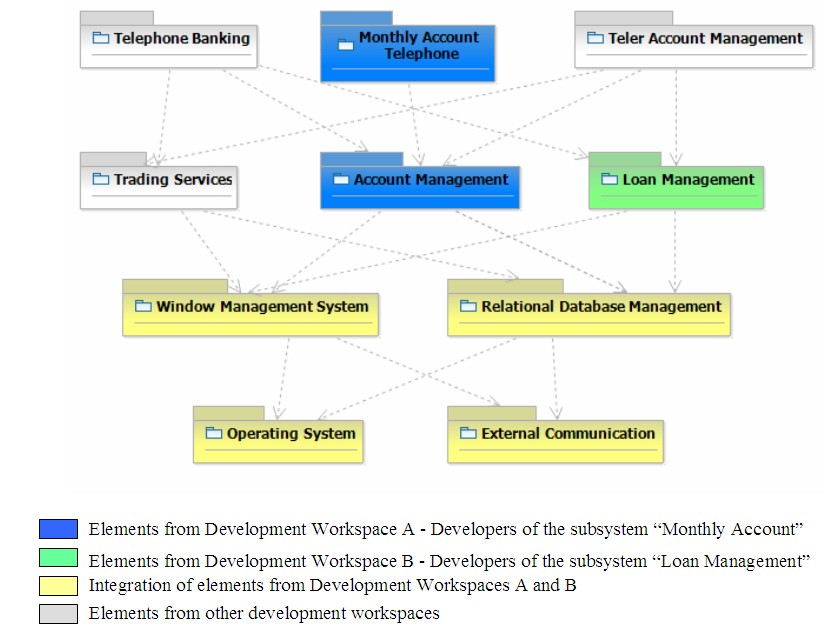
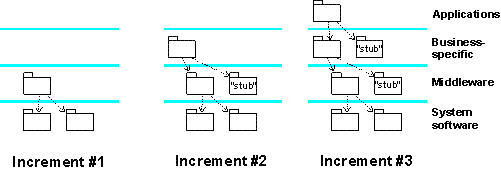

| Concept: Development and Integration Workspaces |
 |
|
| Related Elements |
|---|
|
A system is typically implemented by teams of individual implementers working together and in parallel. To make this possible, several workspaces are needed such as:
Development WorkspaceIndividual implementers have a development workspace where they implement the subsystems and the contained elements for which they are responsible. To compile, link, execute, and test the code in the subsystem, other parts of the system are needed. Normally the implementers do not need the entire system to develop their subsystem. It's usually enough to have the subsystems required to compile, link, and execute the subsystem in the development workspace. These other subsystems do not have to reside in any one implementer's private development workspace as physical copies. Instead they can reside in a common repository with the internally released subsystems. When implementers compile the precise location of the other subsystems, it's defined in a separate file; for example, a makefile. Example: The Monthly Account Telephone subsystem (in a banking system) needs the subsystems that are directly or indirectly imported by the subsystem to compile, link, and execute its elements. In this case, six of the ten subsystems will be needed for the implementers of the Monthly Account Telephone subsystem.  The development workspace for implementers of the subsystem Monthly Account Telephone Integration Workspace for the TeamAt times there may be a team of implementers who simultaneously develop the same subsystem. In this case implementers need to integrate their elements into a subsystem before it can be propagated on to system integration. Team integration is often done in a subsystem integration workspace dedicated to the integration of individual team member's work. One team member acts as the integrator and is responsible for the integration workspace and its performance. Integration Workspace for Integrators at the System LevelSystem integrators have an integration workspace where they can add one or several software elements or one or several subsystems at a time, thereby creating builds that are then integration tested.  An integration workspace for system integrators where subsystems are added in each integration increment |
Licensed Materials - Property of IBM |